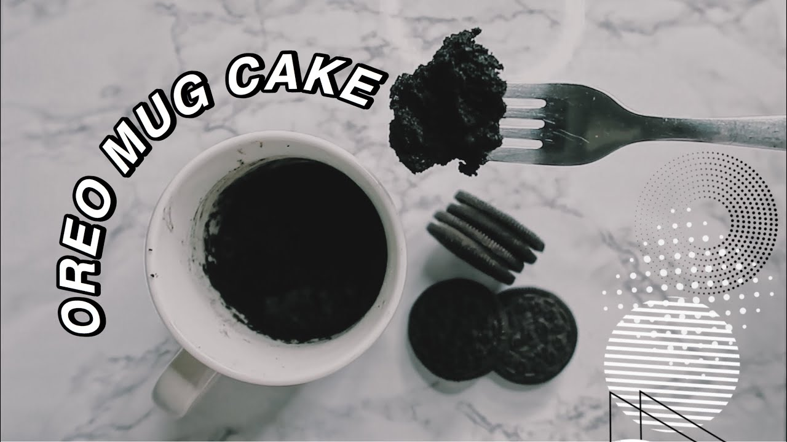
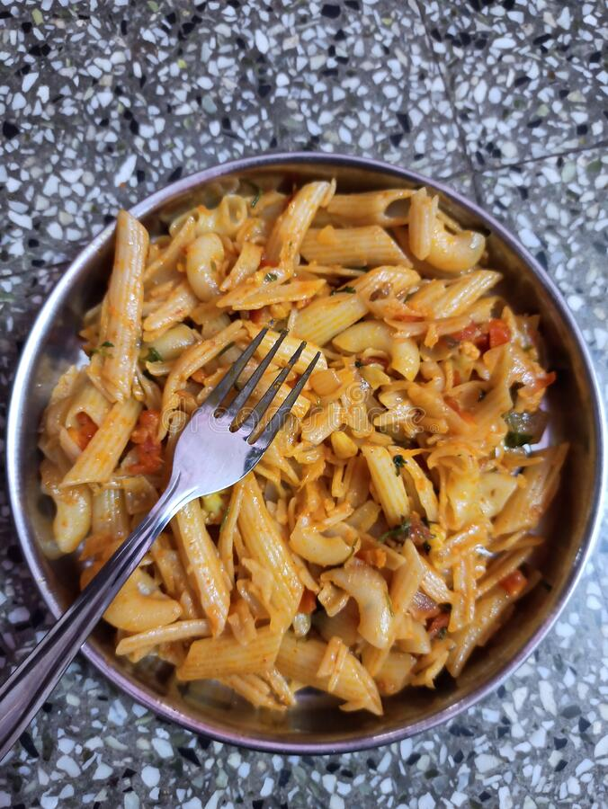

Add 1.5 cups of whole milk. Milk can be chilled or at room temperature. You can add about 1 to 3 tablespoons of sugar at this point (according to your taste).
Add 2 to 3 ice cubes. Adding ice cubes is optional.
Blend till smooth. There should be no chunks of mangoes in the shake.
Enjoy!
Oreo Mug Cake

Literally the easiest recepie existing on this planet.
List of Ingredients
Oreo biscuits
Milk
Baking powder (optional)
Steps:
Crush 4 Oreos (or more if you want more cake!) in a bowl or blender until you have an ultra-fine consistency.
If you want to make your mug cake fluffier, add 1/4 teaspoon baking powder.
Add 3-4 tablespoons of milk and mix well.
Place in the microwave for about 90 seconds, and that's it! Sprinkle with your favorite toppings if desired.
Enjoy!
Basicta Pasta

Pasta does not need description.
List of Ingredients
Pasta
Pasta sauce
Chopped onions
Chopped tomatos
Chopped chillies
Mayonnaise
Steps:
Clean and boil the pasta.
Add few drops of oil in the pan. Add chopped onions, tomatoes and chillies.
Add the boiled pasta. Add salt and chilli powder according to taste.